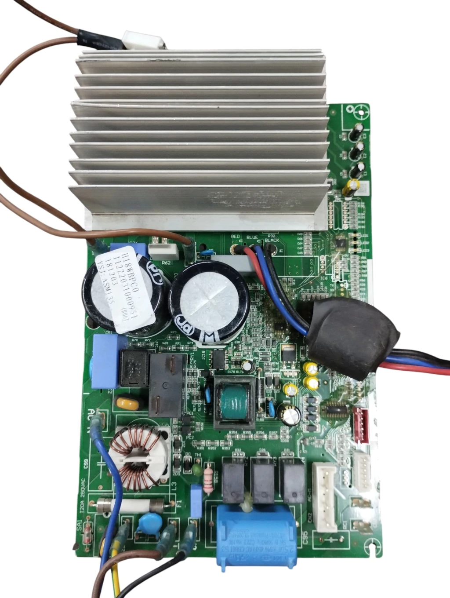

Servicio técnico especializado en reparación de módulos de potencia, fuentes conmutadas y placas electrónicas para lavarropas, heladeras y aires acondicionados Inverter en Mar del Plata.
Recibimos la placa en nuestro taller para conectarla al banco de pruebas y rastrear la falla (fugas de tensión, errores de comunicación, códigos de falla o placas totalmente apagadas).
Te enviamos un presupuesto claro con el diagnóstico preciso, detallando la mano de obra de reparación y los componentes electrónicos a reemplazar (IGBT, fuentes, microprocesadores, capacitores).
Realizamos las soldaduras de componentes SMD/DIP y sometemos la placa a pruebas de esfuerzo dinámico antes de la entrega para garantizar su perfecto funcionamiento.
Los gastos de componentes e insumos electrónicos corren a cargo del cliente. Podrás abonarlos mediante transferencia bancaria previa al inicio de la reparación o al retirar la placa terminada.
Todas nuestras reparaciones electrónicas cuentan con 3 meses (90 días) de garantía en componentes cambiados y mano de obra.
Reparamos placas originales y de reemplazo de todas las marcas en Mar del Plata:
Consultanos por la dirección del taller para traer tu placa a revisión.
Trabajo de reparación de placas electrónicas e inverter en Mar del Plata:
